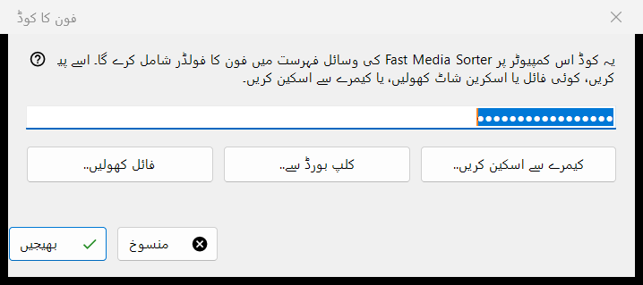
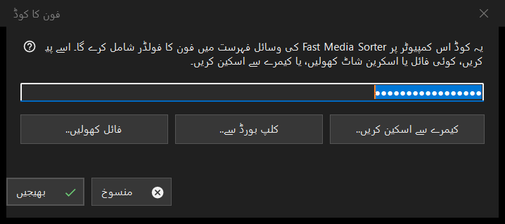

فون کا کوڈ
یہ کس مقصد کے لیے ہے
فون ایپ کا بنایا ہوا کنکشن کوڈ وصول کرتا ہے اور اسے Fast Media Sorter کو دیتا ہے، جو فون کا فولڈر اس کمپیوٹر پر اپنی وسائل کی فہرست میں شامل کرتا ہے۔ یہ Share Manager کی مرکزی ونڈو کے فون کوڈ.. بٹن سے کھلتا ہے۔


اس ترتیب میں
- کوڈ کو ونڈو میں چار طریقوں میں سے کسی ایک سے لائیں: خانے میں ٹائپ یا پیسٹ کریں، یا فائل کھولیں.. دبائیں، کلپ بورڈ سے.. دبائیں، یا کیمرے سے اسکین کریں.. دبائیں۔
- بھیجیں دبائیں۔
- ظاہر ہونے والی Fast Media Sorter کی ونڈو میں فولڈر شامل کرنے کی تصدیق کریں۔
عناصر
کنکشن کوڈ
ایک لائن کا خانہ جو حروف کی جگہ نقطے دکھاتا ہے، کیونکہ کوڈ راز ہے؛ یہ کبھی لاگ میں نہیں لکھا جاتا۔ خالی خانے کے ساتھ بھیجیں دبانے پر آپ سے کہا جاتا ہے کہ کوڈ ٹائپ کریں، پیسٹ کریں، یا کوئی فائل یا اسکرین شاٹ کھولیں۔
فائل، کلپ بورڈ اور کیمرہ
فائل کھولیں.. بٹن .fmscfg، .json اور .txt فائلیں اور QR تصاویر (.png، .jpg، .jpeg، .bmp، .webp) پڑھتا ہے؛ فائل کو ونڈو پر گھسیٹ کر چھوڑا بھی جا سکتا ہے۔ کلپ بورڈ سے.. کوڈ کو کلپ بورڈ سے پڑھتا ہے۔ کیمرے سے اسکین کریں.. کیمرے کی ونڈو کھولتا ہے، اور اسکین کیا گیا متن ایسے سمجھا جاتا ہے جیسے اسے پیسٹ کیا گیا ہو۔
بھیجیں
کوڈ کی جانچ ہوتی ہے، پھر اسے چلتی ہوئی Fast Media Sorter کو بھیجا جاتا ہے، جس کا اپنا امپورٹ ڈائیلاگ پھر بھی اپنے معمول کے سوالات پوچھتا ہے۔ کامیابی پر حالت میں یہ لکھا آتا ہے: کوڈ بھیج دیا گیا ہے: Fast Media Sorter کی ونڈو میں اضافے کی تصدیق کریں۔ اور یہ ونڈو بند ہو جاتی ہے۔ اگر Fast Media Sorter نہ ملے، پرانا ورژن ہو یا جواب نہ دے تو کوڈ رازداری کے نشانات کے ساتھ کلپ بورڈ پر رکھ دیا جاتا ہے، اور حالت کی لائن کہتی ہے کہ اسے وسائل کے پینل میں کلپ بورڈ سے درآمد کے ذریعے پیسٹ کریں۔
حالت کی لائن کے پیغامات
ایسا دستاویز جو نہ کنکشن کوڈ ہو اور نہ وسائل کی ترتیبات کی فائل، ناقابل مطالعہ بتایا جاتا ہے۔ نئے ورژن کی بنائی ہوئی فائل Fast Media Sorter کو اپ ڈیٹ کرنے کو کہتی ہے۔ اگر کوئی اور پروگرام کلپ بورڈ تھامے ہو تو حالت یہی بتاتی ہے۔
مینیجر کی ترتیبات · SFTP اشتراک کی ترتیبات · ایکسچینج سرور کی ترتیبات